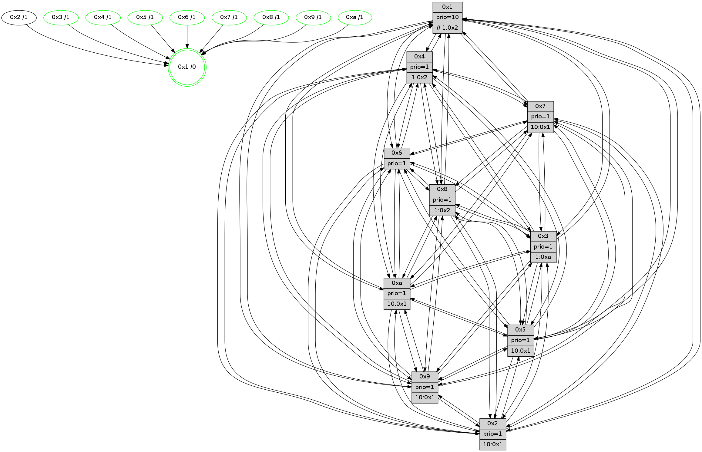

>> << IDX [start] -100 -25 -5 +0 +5 +25 +100 [1085.0016191]
 Previous packets
----------------------------------------------------------------------
1080.168034 beacon01(faad) #0 coord=01,02,03,04,05,06,07,0a,09,08 cycle=688.0ms assoc
-- color-indic=1 64 b8 ff
1080.178015 beacon02(faad) #0 coord=01,02,03,04,05,06,07,0a,09,08 cycle=688.0ms assoc 64 2b ce
1080.188016 beacon03(faad) #0 coord=01,02,03,04,05,06,07,0a,09,08 cycle=688.0ms assoc 64 51 83
1080.198017 beacon04(faad) #0 coord=01,02,03,04,05,06,07,0a,09,08 cycle=688.0ms assoc 64 26 69
1080.208016 beacon05(faad) #0 coord=01,02,03,04,05,06,07,0a,09,08 cycle=688.0ms assoc 64 5c 24
1080.218016 beacon06(faad) #0 coord=01,02,03,04,05,06,07,0a,09,08 cycle=688.0ms assoc 64 d2 f3
1080.228018 beacon07(faad) #0 coord=01,02,03,04,05,06,07,0a,09,08 cycle=688.0ms assoc 64 a8 be
1080.238022 beacon0a(faad) #0 coord=01,02,03,04,05,06,07,0a,09,08 cycle=688.0ms assoc 64 d9 b5
1080.248021 beacon09(faad) #0 coord=01,02,03,04,05,06,07,0a,09,08 cycle=688.0ms assoc 64 57 62
1080.258022 beacon08(faad) #0 coord=01,02,03,04,05,06,07,0a,09,08 cycle=688.0ms assoc 64 2d 2f
1080.268979 [Hello(1): seq=599 sym=4,2,9,5,10,3,8,6,7 sysInfo=coloring-mode-on,ColoringModeRequestCalled stat=4:10,14,10,2/2:10,1,10,15/9:3,4,9,7/5:12,15,1,7/10:5,14,11,5/3:9,1,14,5/8:3,14,11,1/6:5,1,11,12/7:7,7,10,12]
1080.271556 [Hello(2): seq=686 sym=4,5,7,6,3,9,8,10,1 sysInfo=hasWarning stat=4:8,9,13,8/5:8,8,3,0/7:10,12,12,11/6:13,8,5,10/3:9,8,2,7/9:1,7,5,6/8:12,15,1,9/10:5,9,7,10/1:6,7,3,0]
1080.277516 [Hello(5): seq=690 sym=7,6,4,3,1,9,8,10,2 sysInfo=hasWarning stat=7:0,14,0,11/6:0,3,0,1/4:2,12,9,10/3:0,1,4,12/1:2,3,3,1/9:1,0,10,8/8:8,10,7,0/10:13,5,5,7/2:1,9,9,4]
1080.280171 [Color(8) seq=312 @0:0 prio=1 >1.@2,1.@3,1.@5,1.@a]
1080.282336 [Color(3) seq=319 @0:0 prio=1 >1.@a]
1080.284780 [Hello(6): seq=690 sym=2,3,5,4,7,9,8,10,1 sysInfo=hasWarning stat=2:5,11,11,5/3:15,14,8,10/5:5,5,9,0/4:10,13,3,3/7:2,12,11,9/9:10,11,12,7/8:8,10,6,3/10:12,1,15,12/1:15,3,0,1]
1080.289850 [Color(6) seq=322 @0:0 prio=1]
----------------------------------------------------------------------
1080.956163 beacon01(faad) #0 coord=01,02,03,04,05,06,07,0a,09,08 cycle=688.0ms assoc
-- color-indic=1 64 04 fa
1080.966144 beacon02(faad) #0 coord=01,02,03,04,05,06,07,0a,09,08 cycle=688.0ms assoc 64 97 cb
1080.976145 beacon03(faad) #0 coord=01,02,03,04,05,06,07,0a,09,08 cycle=688.0ms assoc 64 ed 86
1080.986147 beacon04(faad) #0 coord=01,02,03,04,05,06,07,0a,09,08 cycle=688.0ms assoc 64 9a 6c
1080.996146 beacon05(faad) #0 coord=01,02,03,04,05,06,07,0a,09,08 cycle=688.0ms assoc 64 e0 21
1081.006147 beacon06(faad) #0 coord=01,02,03,04,05,06,07,0a,09,08 cycle=688.0ms assoc 64 6e f6
1081.016147 beacon07(faad) #0 coord=01,02,03,04,05,06,07,0a,09,08 cycle=688.0ms assoc 64 14 bb
1081.026152 beacon0a(faad) #0 coord=01,02,03,04,05,06,07,0a,09,08 cycle=688.0ms assoc 64 65 b0
1081.036150 beacon09(faad) #0 coord=01,02,03,04,05,06,07,0a,09,08 cycle=688.0ms assoc 64 eb 67
1081.046152 beacon08(faad) #0 coord=01,02,03,04,05,06,07,0a,09,08 cycle=688.0ms assoc 64 91 2a
1081.058641 PARSE ERROR************************
Traceback (most recent call last):
File "PacketAnalysis.py", line 167, in showOperaPacket
structPacket = OperaPacketParse.parsePacket(rawPacket)
File "../../pkg-python/HipSens/Core/OperaPacketParse.py", line 461, in parsePacket
return parseHelloMessage(data)
File "../../pkg-python/HipSens/Core/OperaPacketParse.py", line 109, in parseHelloMessage
sysInfo,stability,colorInfo = struct.unpack("!HBB", linkList[0:4])
error: unpack requires a string argument of length 4
48 34 08 00 02 7a 00 02 02 12 05 00 02 00 03 00 04 00 09 00 06 00 07 00 0a 00 01 00 53 04 00 02 00 00 4c 12 0c 7d 87 58 eb c6 92 d3 3e 40 cb 4e 2c 9f 3f 35 00 a1 53 70
1081.061376 [Hello(7): seq=690 sym=2,3,5,6,4,8,9,10,1 sysInfo=hasWarning stat=2:10,9,15,0/3:0,1,12,14/5:2,10,13,1/6:7,3,12,8/4:0,1,0,0/8:3,3,9,1/9:2,7,1,1/10:2,10,0,4/1:14,5,2,0]
1081.064693 [Hello(4): seq=690 sym=5,7,6,2,3,9,8,10,1 sysInfo= stat=5:0,5,8,14/7:14,10,9,9/6:2,14,7,11/2:3,1,2,13/3:3,11,6,10/9:8,1,14,10/8:6,15,13,4/10:2,7,0,12/1:8,12,1,1]
1081.067514 [Hello(9): seq=634 sym=2,5,3,4,6,8,10,1 sysInfo=hasWarning stat=2:9,1,5,6/5:14,4,4,5/3:11,13,8,14/4:4,6,2,0/6:9,10,0,10/8:0,8,10,3/10:6,15,11,3/1:13,11,1,1]
1081.070646 [Color(4) seq=270 @0:0 prio=1 >1.@2,1.@3,1.@5,1.@6]
1081.073096 [Color(5) seq=297 @0:0 prio=1 >10.@1,1.@2,1.@3,1.@4]
1081.076338 [STC(1) #0.159 tree-change,inconsistent-stability,stable,to-color d=0]
1081.078211 [Color(7) seq=249 @0:0 prio=1 >10.@1,1.@2,1.@3,1.@5]
1081.080622 [Hello(10): seq=623 sym=6,2,3,8,7,5,9,4,1 sysInfo=hasWarning stat=6:1,6,12,5/2:1,0,1,9/3:7,15,1,10/8:0,3,6,0/7:2,9,12,4/5:10,1,10,14/9:15,15,14,2/4:10,0,14,8/1:4,8,9,1]
1081.083219 [Color(1) seq=371 @0:0 prio=10 >>1.@2,1.@3,1.@4]
1081.085138 [Color(9) seq=296 @0:0 prio=1 >10.@1,1.@2,1.@3,1.@5]
----------------------------------------------------------------------
1081.744295 beacon01(faad) #0 coord=01,02,03,04,05,06,07,0a,09,08 cycle=688.0ms assoc
-- color-indic=1 64 c0 f4
1081.754276 beacon02(faad) #0 coord=01,02,03,04,05,06,07,0a,09,08 cycle=688.0ms assoc 64 53 c5
1081.764277 beacon03(faad) #0 coord=01,02,03,04,05,06,07,0a,09,08 cycle=688.0ms assoc 64 29 88
1081.774277 beacon04(faad) #0 coord=01,02,03,04,05,06,07,0a,09,08 cycle=688.0ms assoc 64 5e 62
1081.784277 beacon05(faad) #0 coord=01,02,03,04,05,06,07,0a,09,08 cycle=688.0ms assoc 64 24 2f
1081.794280 beacon06(faad) #0 coord=01,02,03,04,05,06,07,0a,09,08 cycle=688.0ms assoc 64 aa f8
1081.804278 beacon07(faad) #0 coord=01,02,03,04,05,06,07,0a,09,08 cycle=688.0ms assoc 64 d0 b5
1081.814283 beacon0a(faad) #0 coord=01,02,03,04,05,06,07,0a,09,08 cycle=688.0ms assoc 64 a1 be
1081.824281 beacon09(faad) #0 coord=01,02,03,04,05,06,07,0a,09,08 cycle=688.0ms assoc 64 2f 69
1081.834284 beacon08(faad) #0 coord=01,02,03,04,05,06,07,0a,09,08 cycle=688.0ms assoc 64 55 24
1081.845216 [Hello(1): seq=600 sym=4,2,9,5,10,3,8,6,7 sysInfo=coloring-mode-on,ColoringModeRequestCalled stat=4:10,14,10,2/2:11,1,10,15/9:3,5,9,7/5:13,15,1,7/10:5,14,11,5/3:10,2,14,5/8:4,15,11,1/6:6,2,11,12/7:7,7,10,12]
1081.849222 [Hello(5): seq=691 sym=7,6,4,3,1,9,8,10,2 sysInfo=hasWarning stat=7:0,15,0,11/6:1,4,0,1/4:2,12,9,10/3:0,2,4,12/1:2,4,4,1/9:1,1,10,8/8:9,11,7,0/10:14,5,5,7/2:1,9,9,4]
1081.851762 [Hello(6): seq=691 sym=2,3,5,4,7,9,8,10,1 sysInfo=hasWarning stat=2:6,11,11,5/3:15,14,8,10/5:5,6,9,0/4:11,14,3,3/7:3,13,11,9/9:11,12,12,7/8:9,10,6,3/10:13,1,15,12/1:0,4,1,1]
1081.854290 [Hello(2): seq=687 sym=4,5,7,6,3,9,8,10,1 sysInfo=hasWarning stat=4:9,10,13,8/5:9,9,3,0/7:11,13,12,11/6:14,9,5,10/3:9,9,2,7/9:2,8,5,6/8:13,0,1,9/10:6,10,7,10/1:6,8,4,0]
1081.857935 [STC(5)->1 #0.159 tree-change,inconsistent-stability,stable,to-color d=1]
1081.859350 [STC(2)->1 #0.159 tree-change,inconsistent-stability,to-color d=1]
1081.860702 [STC(4)->1 #0.159 tree-change,inconsistent-stability,stable,to-color d=1]
1081.864772 [STC(6)->1 #0.159 tree-change,inconsistent-stability,stable,to-color d=1]
1081.867554 [Color(10) seq=280 @0:0 prio=1 >10.@1,1.@2,1.@3,1.@5]
1081.871644 [STC(3)->1 #0.159 tree-change,inconsistent-stability,stable,to-color d=1]
1081.874862 [Color(3) seq=320 @0:0 prio=1 >1.@a]
----------------------------------------------------------------------
1082.532425 beacon01(faad) #0 coord=01,02,03,04,05,06,07,0a,09,08 cycle=688.0ms assoc
-- color-indic=1 64 7c f1
1082.542406 beacon02(faad) #0 coord=01,02,03,04,05,06,07,0a,09,08 cycle=688.0ms assoc 64 ef c0
1082.552408 beacon03(faad) #0 coord=01,02,03,04,05,06,07,0a,09,08 cycle=688.0ms assoc 64 95 8d
1082.562409 beacon04(faad) #0 coord=01,02,03,04,05,06,07,0a,09,08 cycle=688.0ms assoc 64 e2 67
1082.572408 beacon05(faad) #0 coord=01,02,03,04,05,06,07,0a,09,08 cycle=688.0ms assoc 64 98 2a
1082.582407 beacon06(faad) #0 coord=01,02,03,04,05,06,07,0a,09,08 cycle=688.0ms assoc 64 16 fd
1082.592409 beacon07(faad) #0 coord=01,02,03,04,05,06,07,0a,09,08 cycle=688.0ms assoc 64 6c b0
1082.602414 beacon0a(faad) #0 coord=01,02,03,04,05,06,07,0a,09,08 cycle=688.0ms assoc 64 1d bb
1082.612412 beacon09(faad) #0 coord=01,02,03,04,05,06,07,0a,09,08 cycle=688.0ms assoc 64 93 6c
1082.622413 beacon08(faad) #0 coord=01,02,03,04,05,06,07,0a,09,08 cycle=688.0ms assoc 64 e9 21
1082.634596 [Hello(10): seq=624 sym=6,2,3,8,7,5,9,4,1 sysInfo=hasWarning stat=6:1,7,12,5/2:1,0,1,9/3:7,0,2,10/8:0,3,6,0/7:2,9,12,4/5:10,1,10,14/9:15,0,14,2/4:10,0,14,8/1:5,9,9,1]
1082.640303 [Hello(8): seq=635 sym=5,2,3,4,9,6,7,10,1 sysInfo=hasWarning stat=5:13,8,12,0/2:8,5,7,8/3:6,12,11,14/4:4,14,2,9/9:1,5,14,3/6:14,4,11,12/7:0,10,12,2/10:6,3,15,3/1:2,11,1,0]
1082.646229 [Color(5) seq=298 @0:0 prio=1 >10.@1,1.@2,1.@3,1.@4]
1082.650684 [Color(4) seq=271 @0:0 prio=1 >1.@2,1.@3,1.@5,1.@6]
1082.655776 [Color(9) seq=297 @0:0 prio=1 >10.@1,1.@2,1.@3,1.@5]
1082.665047 [Color(1) seq=372 @0:0 prio=10 >>1.@2,1.@3,1.@4]
1082.667690 [Hello(7): seq=691 sym=2,3,5,6,4,8,9,10,1 sysInfo=hasWarning stat=2:11,9,0,0/3:0,2,13,14/5:3,10,14,1/6:8,4,13,8/4:0,1,1,0/8:4,3,9,1/9:2,8,1,1/10:3,10,0,4/1:15,6,2,0]
1082.671489 [Color(7) seq=250 @0:0 prio=1 >10.@1,1.@2,1.@3,1.@5]
----------------------------------------------------------------------
1083.320558 beacon01(faad) #0 coord=01,02,03,04,05,06,07,0a,09,08 cycle=688.0ms assoc
-- color-indic=1 64 68 9f
1083.330540 beacon02(faad) #0 coord=01,02,03,04,05,06,07,0a,09,08 cycle=688.0ms assoc 64 fb ae
1083.340540 beacon03(faad) #0 coord=01,02,03,04,05,06,07,0a,09,08 cycle=688.0ms assoc 64 81 e3
1083.350540 beacon04(faad) #0 coord=01,02,03,04,05,06,07,0a,09,08 cycle=688.0ms assoc 64 f6 09
1083.360541 beacon05(faad) #0 coord=01,02,03,04,05,06,07,0a,09,08 cycle=688.0ms assoc 64 8c 44
1083.370540 beacon06(faad) #0 coord=01,02,03,04,05,06,07,0a,09,08 cycle=688.0ms assoc 64 02 93
1083.380542 beacon07(faad) #0 coord=01,02,03,04,05,06,07,0a,09,08 cycle=688.0ms assoc 64 78 de
1083.390546 beacon0a(faad) #0 coord=01,02,03,04,05,06,07,0a,09,08 cycle=688.0ms assoc 64 09 d5
1083.400547 beacon09(faad) #0 coord=01,02,03,04,05,06,07,0a,09,08 cycle=688.0ms assoc 64 87 02
1083.410546 beacon08(faad) #0 coord=01,02,03,04,05,06,07,0a,09,08 cycle=688.0ms assoc 64 fd 4f
1083.422406 [Hello(5): seq=692 sym=7,6,4,3,1,9,8,10,2 sysInfo=hasWarning stat=7:1,0,0,11/6:1,4,1,1/4:2,13,10,10/3:0,3,5,12/1:3,5,4,1/9:1,2,10,8/8:9,12,7,0/10:15,6,5,7/2:1,9,10,4]
1083.425386 [Hello(2): seq=688 sym=4,5,7,6,3,9,8,10,1 sysInfo=hasWarning stat=4:10,11,14,8/5:9,10,3,0/7:12,14,12,11/6:14,10,6,10/3:9,10,3,7/9:2,9,5,6/8:14,0,1,9/10:7,11,7,10/1:7,9,4,0]
1083.428598 [Color(10) seq=281 @0:0 prio=1 >10.@1,1.@2,1.@3,1.@5]
1083.430695 [Color(8) seq=314 @0:0 prio=1 >1.@2,1.@3,1.@5,1.@a]
1083.433091 [Hello(1): seq=601 sym=4,2,9,5,10,3,8,6,7 sysInfo=coloring-mode-on,ColoringModeRequestCalled stat=4:10,14,11,2/2:12,1,11,15/9:3,5,9,7/5:14,15,2,7/10:6,15,11,5/3:10,3,15,5/8:4,15,11,1/6:7,3,12,12/7:8,8,10,12]
1083.437248 [Hello(6): seq=692 sym=2,3,5,4,7,9,8,10,1 sysInfo=hasWarning stat=2:6,11,11,5/3:15,14,8,10/5:5,7,9,0/4:11,15,3,3/7:4,14,11,9/9:11,13,12,7/8:10,10,6,3/10:14,1,15,12/1:1,5,1,1]
1083.441017 [Color(6) seq=324 @0:0 prio=1]
1083.443903 [Hello(3): seq=692 sym=1,7,6,2,4,8,9,10,5 sysInfo=hasWarning stat=1:3,0,12,0/7:8,0,4,9/6:1,9,3,4/2:1,13,7,15/4:11,6,9,9/8:7,14,2,2/9:4,5,9,13/10:9,4,5,3/5:8,8,14,14]
1083.448969 [Color(3) seq=321 @0:0 prio=1 >1.@a]
----------------------------------------------------------------------
1084.108690 beacon01(faad) #0 coord=01,02,03,04,05,06,07,0a,09,08 cycle=688.0ms assoc
-- color-indic=1 64 d4 9a
1084.118671 beacon02(faad) #0 coord=01,02,03,04,05,06,07,0a,09,08 cycle=688.0ms assoc 64 47 ab
1084.128673 beacon03(faad) #0 coord=01,02,03,04,05,06,07,0a,09,08 cycle=688.0ms assoc 64 3d e6
1084.138673 beacon04(faad) #0 coord=01,02,03,04,05,06,07,0a,09,08 cycle=688.0ms assoc 64 4a 0c
1084.148672 beacon05(faad) #0 coord=01,02,03,04,05,06,07,0a,09,08 cycle=688.0ms assoc 64 30 41
1084.158674 beacon06(faad) #0 coord=01,02,03,04,05,06,07,0a,09,08 cycle=688.0ms assoc 64 be 96
1084.168674 beacon07(faad) #0 coord=01,02,03,04,05,06,07,0a,09,08 cycle=688.0ms assoc 64 c4 db
1084.178678 beacon0a(faad) #0 coord=01,02,03,04,05,06,07,0a,09,08 cycle=688.0ms assoc 64 b5 d0
1084.188679 beacon09(faad) #0 coord=01,02,03,04,05,06,07,0a,09,08 cycle=688.0ms assoc 64 3b 07
1084.198679 beacon08(faad) #0 coord=01,02,03,04,05,06,07,0a,09,08 cycle=688.0ms assoc 64 41 4a
1084.210222 [Hello(8): seq=636 sym=5,2,3,4,9,6,7,10,1 sysInfo=hasWarning stat=5:14,9,12,0/2:8,5,7,8/3:7,13,11,14/4:4,15,2,9/9:1,6,14,3/6:15,5,11,12/7:1,11,12,2/10:6,3,15,3/1:3,12,1,0]
1084.213493 [Hello(7): seq=692 sym=2,3,5,6,4,8,9,10,1 mpr= sysInfo=hasWarning stat=2:12,9,0,0/3:1,3,13,14/5:4,10,14,1/6:9,5,13,8/4:0,1,1,0/8:4,4,9,1/9:2,8,1,1/10:4,11,0,4/1:0,6,2,0]
1084.216959 [Color(7) seq=251 @0:0 prio=1 >10.@1,1.@2,1.@3,1.@5]
1084.219137 [Hello(10): seq=625 sym=6,2,3,8,7,5,9,4,1 sysInfo=hasWarning stat=6:2,8,12,5/2:1,0,1,9/3:8,1,2,10/8:1,4,6,0/7:3,10,12,4/5:11,2,10,14/9:0,1,14,2/4:10,1,14,8/1:6,10,9,1]
1084.224498 [Color(1) seq=373 @0:0 prio=10 >>1.@2,1.@3,1.@4]
1084.227456 [Hello(4): seq=692 sym=5,7,6,2,3,9,8,10,1 sysInfo= stat=5:1,6,8,14/7:15,12,9,9/6:3,0,8,11/2:4,1,2,13/3:4,13,7,10/9:8,3,14,10/8:7,0,13,4/10:4,9,0,12/1:9,14,2,1]
1084.231858 [Color(4) seq=272 @0:0 prio=1 >1.@2,1.@3,1.@5,1.@6]
1084.237099 [Hello(9): seq=636 sym=2,5,3,4,7,6,8,10,1 sysInfo=hasWarning stat=2:11,1,6,6/5:0,4,5,5/3:13,15,9,14/4:4,6,3,0/7:0,1,0,0/6:10,11,1,10/8:1,9,11,3/10:7,0,11,3/1:15,12,1,1]
1084.241510 [Color(9) seq=298 @0:0 prio=1 >10.@1,1.@2,1.@3,1.@5]
----------------------------------------------------------------------
1084.896820 beacon01(faad) #0 coord=01,02,03,04,05,06,07,0a,09,08 cycle=688.0ms assoc
-- color-indic=1 64 10 94
1084.906802 beacon02(faad) #0 coord=01,02,03,04,05,06,07,0a,09,08 cycle=688.0ms assoc 64 83 a5
1084.916803 beacon03(faad) #0 coord=01,02,03,04,05,06,07,0a,09,08 cycle=688.0ms assoc 64 f9 e8
1084.926803 beacon04(faad) #0 coord=01,02,03,04,05,06,07,0a,09,08 cycle=688.0ms assoc 64 8e 02
1084.936803 beacon05(faad) #0 coord=01,02,03,04,05,06,07,0a,09,08 cycle=688.0ms assoc 64 f4 4f
1084.946804 beacon06(faad) #0 coord=01,02,03,04,05,06,07,0a,09,08 cycle=688.0ms assoc 64 7a 98
1084.956803 beacon07(faad) #0 coord=01,02,03,04,05,06,07,0a,09,08 cycle=688.0ms assoc 64 00 d5
1084.966808 beacon0a(faad) #0 coord=01,02,03,04,05,06,07,0a,09,08 cycle=688.0ms assoc 64 71 de
1084.976808 beacon09(faad) #0 coord=01,02,03,04,05,06,07,0a,09,08 cycle=688.0ms assoc 64 ff 09
1084.986808 beacon08(faad) #0 coord=01,02,03,04,05,06,07,0a,09,08 cycle=688.0ms assoc 64 85 44
1084.998342 [Hello(5): seq=693 sym=7,6,4,3,1,9,8,10,2 sysInfo=hasWarning stat=7:1,0,0,11/6:2,5,1,1/4:3,14,10,10/3:1,4,5,12/1:4,6,4,1/9:2,3,10,8/8:10,13,7,0/10:0,7,5,7/2:2,9,10,4]